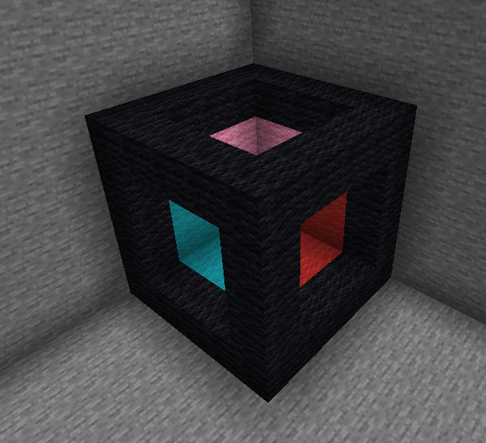
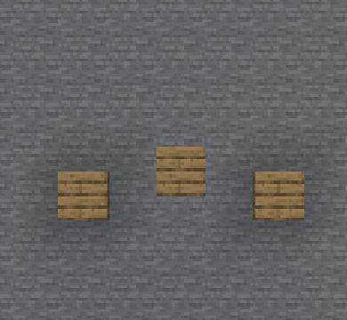
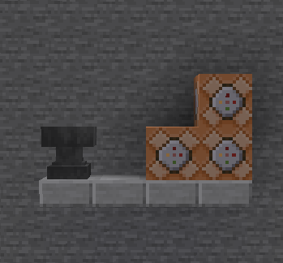

Non-Euclidian Minecraft
Adventure map - Java

'A small map' is a map consisting of 9 5x5 rooms, the twist is that the rooms will change depending on the order in wich you enter them, getting more and more confusing. The object of this puzzle map is to collect an assortment of buttons and tools in order to complete the map.
Time: 30-90mins
Recomended players: 1 player
2 or more players will break the map
Moving Block Parkour
Parkour Map - Java

'Parkour POGGG' is a map all about imporoving your parkour skills, in a useless way. Yes you will never actually see moving blocks in minecraft regularly, but it's fun! And no this is not fake the blocks actually move smoothly, withought pistons, its cool and worth a download. Improve your skills in a useless way.
Time: 45mins
Recomended players: 1 player
with 2+ players checkpoints might be buggy, but its playable
Lamp
Adventure - Java

'Lamp' is a map that is just lore, it has no main theme other than random fun puzzles, alot of fun details and puzzles. This is a fun map about trying to get your personal data back from an evil coorperate entity. It jokes about stealing your passwords, but thats impossible.
Time: 30mins
Recomended players: 1 player
2+ players probably wont break the map but idk.
Multiplayer Games
Mini Games - Bedrock

'Mini games by formal' is a map for you and your friends, it has parkour, pvp, spleef, and origional games! This is a great map for people with friens, if you don't have those then rip. Enojy the wonderful world of not being lonely! Also fun fact it was created entierly on a phone.
Time: Until you get bored (10 minutes)
Recomended players: 2-8 players
Each game will always work with 2 players